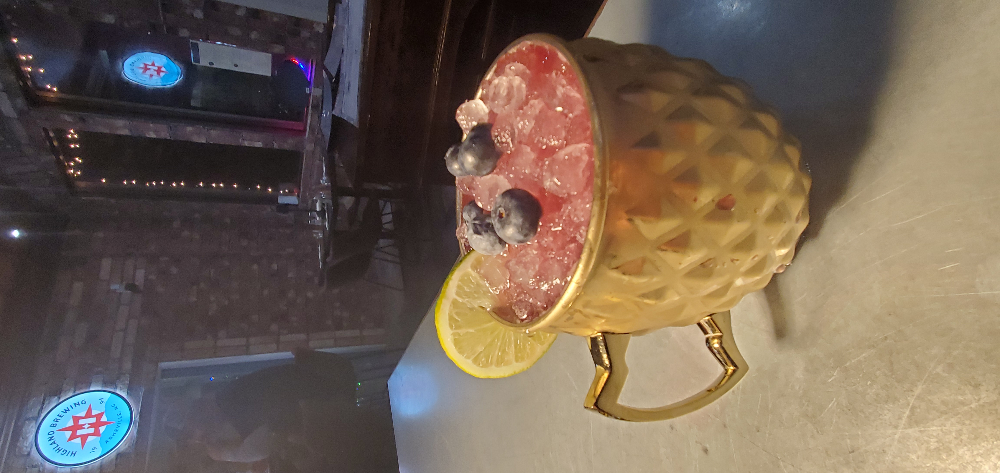

Nestled in the Foothills of the North Georgia mountains, Marble Hill Tavern is a locally owned neighborhood pub with a cozy, steakhouse feel serving American Wagyu Smash Burgers, New York Strip & Ribeyes from North Georgia Meat Company.
Watch your favorite sports while sipping on our signature cocktails & craft beers.
The Blue Ridge Blueberry Mule and Foothills Old Fashioned are local favorites! Our diverse menu includes burgers, salads, fish and chips with house made tartar sauce, giant pretzels, pork chops, baked potato, create your own veggie platter and wings.


A short drive to Amicalola Falls State Park, the beginning of the Appalachian Trail, Gibbs Garden, and Big Canoe,Marble Hill Tavern is the perfect spot to begin or end your adventures.